第4章 相交线与平行线
4.2 平行线
🎯 学习目标
如图4.2.11，我们已经学会如何判定两条直线平行。反过来，如果已知两条直线平行，那么同位角、内错角、同旁内角之间有什么关系呢？让我们通过测量或推理来探究。
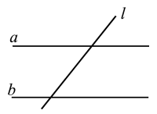
试一试
翻开你的数学练习横格本，每一页上都有许多如图4.2.12所示的互相平行的横线条，随意画一条斜线与这些横线条相交，找出其中任意一对同位角。观察或用量角器度量这对同位角，你有什么发现？
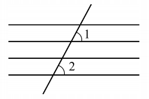
你会发现它们相等。由此猜想：两条平行直线被第三条直线所截，同位角相等。
性质1：两直线平行，同位角相等
如图4.2.13，如果直线 \(a \mathrel{/\mkern-5mu/} b\)，那么 \(\angle 1\) 与 \(\angle 2\) 有什么关系？
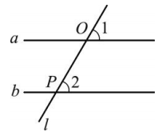
我们可以用反证法证明：假设 \(\angle 1 \neq \angle 2\)，过点 \(O\) 作另一条直线 \(a'\)，使得 \(\angle 1' = \angle 2\)，如图4.2.14。根据“同位角相等，两直线平行”，可得 \(a' \mathrel{/\mkern-5mu/} b\)。这样就过点 \(O\) 有两条直线 \(a\) 和 \(a'\) 都与 \(b\) 平行，这与基本事实“过直线外一点有且只有一条直线与这条直线平行”矛盾。因此 \(\angle 1 = \angle 2\)。
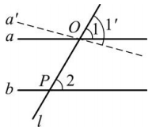
两条平行直线被第三条直线所截，同位角相等。简称为：两直线平行，同位角相等。
性质2：两直线平行，内错角相等
如图4.2.5，由性质1，可以推出内错角的关系。

推理：\(\because a \mathrel{/\mkern-5mu/} b\)，∴ \(\angle 1 = \angle 2\)（两直线平行，同位角相等）。又 \(\angle 1 = \angle 3\)（对顶角相等），∴ \(\angle 2 = \angle 3\)。
两条平行直线被第三条直线所截，内错角相等。简称为：两直线平行，内错角相等。
性质3：两直线平行，同旁内角互补
如图4.2.5.3，由性质1，可以推出同旁内角互补。

推理：\(\because a \mathrel{/\mkern-5mu/} b\)，∴ \(\angle 1 = \angle 2\)（两直线平行，同位角相等）。又 \(\angle 1 + \angle 4 = 180^\circ\)（邻补角定义），∴ \(\angle 2 + \angle 4 = 180^\circ\)。
两条平行直线被第三条直线所截，同旁内角互补。简称为：两直线平行，同旁内角互补。
📌 平行线的性质：
- 两直线平行，同位角相等；
- 两直线平行，内错角相等；
- 两直线平行，同旁内角互补。
📐 例4
如图4.2.16，已知直线 \(a \mathrel{/\mkern-5mu/} b\)，\(\angle 1 = 50^\circ\)，求 \(\angle 2\) 的度数。
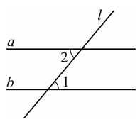
\(\because a \mathrel{/\mkern-5mu/} b\) (已知)，
\(\therefore \angle 2 = \angle 1\) (两直线平行，内错角相等).
\(\because \angle 1 = 50^\circ\) (已知)，
\(\therefore \angle 2 = 50^\circ\) (等量代换).
📐 例5
如图4.2.17，在四边形 \(ABCD\) 中，已知 \(AB \mathrel{/\mkern-5mu/} CD\)，\(\angle B = 60^\circ\)，求 \(\angle C\) 的度数。能否求得 \(\angle A\) 的度数？
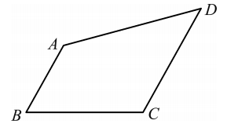
\(\because AB \mathrel{/\mkern-5mu/} CD\) (已知)，
\(\therefore \angle B + \angle C = 180^\circ\) (两直线平行，同旁内角互补).
\(\because \angle B = 60^\circ\) (已知)，
\(\therefore \angle C = 180^\circ - 60^\circ = 120^\circ\) (等式的性质).
根据已知条件，无法求出 \(\angle A\) 的度数。
📐 例6
将如图4.2.18所示的方格图中的图形向右平行移动4格，再向上平行移动3格，画出平行移动后的图形。
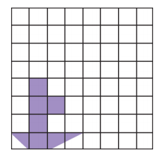
如图4.2.19所示的图形，即为原图形向右平行移动4格、再向上平行移动3格后的图形。原图形中的每一个顶点及每一条边都相应地移动了相同的格数。
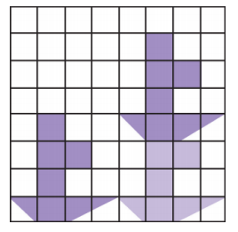
✏️ 练习
1. 根据题图，在下列解答中，填上适当的理由：
(1) \(\because AD \mathrel{/\mkern-5mu/} BC\) (已知)，\(\therefore \angle 1 = \angle B\)
.
(2) \(\because AB \mathrel{/\mkern-5mu/} CD\) (已知)，\(\therefore \angle 1 = \angle D\)
.
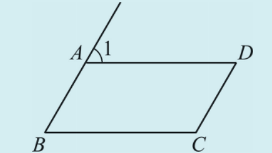
(1) 两直线平行，同位角相等； (2) 两直线平行，内错角相等。
2. 根据题图，在下列解答中，填空：
(1) \(\because AD \mathrel{/\mkern-5mu/} BC\) (已知)，
\(\therefore \angle\)
\(+ \angle ABC = 180^\circ\) (两直线平行，同旁内角互补).
(2) \(\because AB \mathrel{/\mkern-5mu/} CD\) (已知)，
\(\therefore \angle ABC + \angle\)
\(= 180^\circ\) (两直线平行，同旁内角互补).
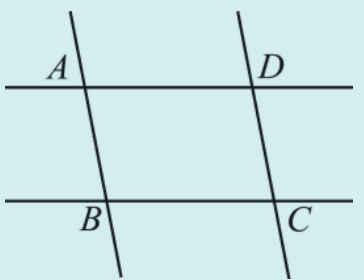
(1) \(\angle BAD\)； (2) \(\angle BCD\)。
3. 如图，两条平行直线 \(a, b\) 被第三条直线 \(c\) 所截。若 \(\angle 1 = 52^\circ\)，那么 \(\angle 2 =\)______，\(\angle 3 =\)______，\(\angle 4 =\)______。
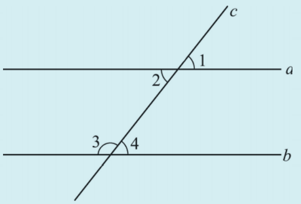
\(\angle 2 = 52^\circ\)（对顶角相等），\(\angle 3 = 128^\circ\)（同旁内角互补），\(\angle 4 = 52^\circ\)（邻补角或同位角相等）。
4. 如图，将方格图中的图形向右平行移动3格，再向下平行移动4格，画出平行移动后的图形。
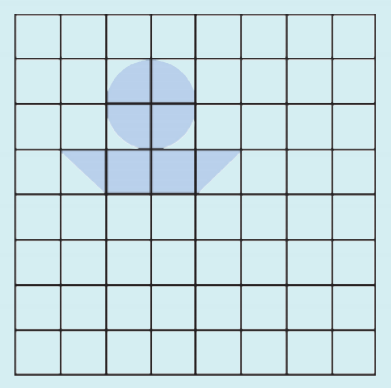
将原图形的每个顶点先向右平移3格，再向下平移4格，然后连接各点即可。
5. 如图，已知直线 \(a \mathrel{/\mkern-5mu/} b\)，\(\angle 3 = 131^\circ\)，求 \(\angle 1\)、\(\angle 2\) 的度数。阅读下面的解答过程，并填空（理由或数学式）。
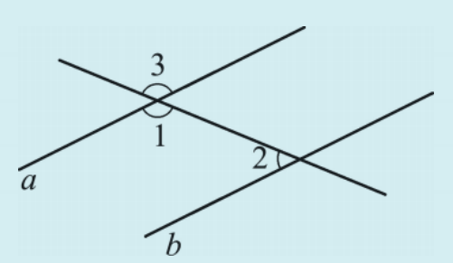
解：\(\because \angle 3 = 131^\circ\) ，
又 \(\because \angle 3 = \angle 1\) ，
\(\therefore \angle 1 =\) .
\(\because a \mathrel{/\mkern-5mu/} b\) ，
\(\therefore \angle 1 + \angle 2 = 180^\circ\) ，
\(\therefore \angle 2 =\) (等式的性质).
已知；对顶角相等；131°；等量代换；已知；两直线平行，同旁内角互补；180°-131°=49°。
📖 读一读 · 信息技术应用——画直线等分三角形的面积
利用动态几何软件，我们可以进一步探索平行线的特征。画出如图1所示的两个三角形，这两个三角形具有共同的底边 \(AB\)，且另一顶点 \(C, D\) 均在与 \(AB\) 平行的直线 \(n\) 上，我们发现这两个三角形的面积相等。如图2，拖动点 \(D\)（或点 \(C\)），改变点 \(D\)（或点 \(C\)）在直线 \(n\) 上的位置，你发现了什么？
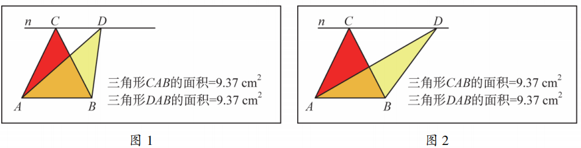
可以发现，当两个三角形底边相同、顶点的连线与底边平行时，这两个三角形的面积相等。
你能经过三角形 \(ABC\) 的顶点 \(A\)，作一条直线平分这个三角形的面积吗？若所作直线与边 \(BC\) 的交点为 \(D\)，如图3，则点 \(D\) 与 \(BC\) 有什么关系？为什么？你能经过三角形一边的中点，作一条直线平分这个三角形的面积吗？
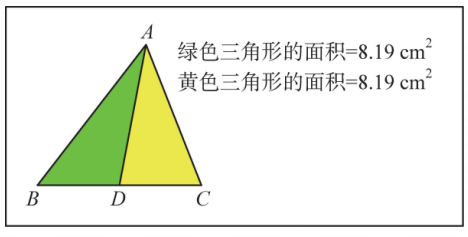
如果点 \(D\) 既不是三角形的顶点，也不是边的中点，那么经过三角形 \(ABC\) 边上的一点 \(D\)，怎样作一条直线平分三角形 \(ABC\) 的面积呢？不妨设点 \(D\) 在边 \(BC\) 上。我们知道边 \(BC\) 上的中线 \(AE\) 能平分三角形的面积。如何作直线 \(DF\)，使三角形 \(ADF\) 的面积与三角形 \(ADE\) 的面积相等，从而平分三角形 \(ABC\) 的面积呢？连结 \(AD\)，过边 \(BC\) 的中点 \(E\) 作 \(AD\) 的平行线，交 \(AB\) 或 \(AC\) 于点 \(F\)，然后过点 \(D\)、\(F\) 作直线 \(DF\)，直线 \(DF\) 就是所要求作的直线，如图4所示。请说明理由。
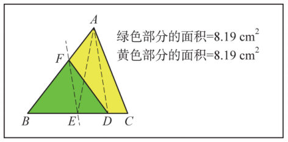
📌 课堂小结
▼🧠 数学思想·核心素养
转化思想： 将平行线的性质转化为角的数量关系。
推理思想： 从已知平行出发，推导角的关系。
数形结合： 利用图形理解角的相等或互补关系。
✨ 平行线的性质，架起平行与角关系的桥梁 ✨